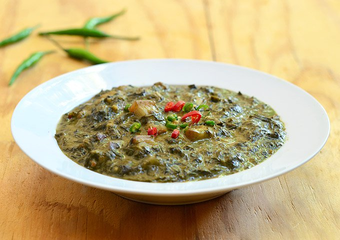

Laing
Coconut is one of the top 5 major crops of Bicol so it is to be expected that coconut milk is a prominent ingredient in this region's cuisine.
Ingredients
different crops
coconut milk
<<< Back to Side Dish